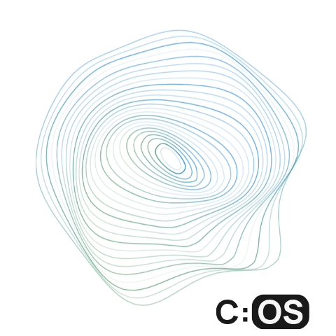

Work Style Quiz
This quiz helps to clarify your preferred working style. This can be used for new and existing teams, or manager-report relationships to understand how to best interact with each other.
None of your results are stored.
Start Quiz
Your Work Style Profile
Restart Quiz